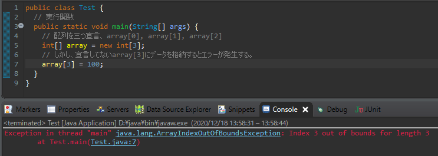

[Java] 5. 配列とリスト(List)、マップ(Map)の使い方
こんにちは。明月です。
この投稿は配列とリスト(List)、マップ(Map)の使い方に関する説明です。
配列は以前C/C++でデータをデータタイプのサイズによって順番的に並べることが配列だといいます。Javaはランタイムメモリ構造なのでデータがメモリに順番的に並べることについては意味がありません。すべてデータをポインターで連結するからです。
それでも使うことは同じデータタイプのデータを一つの変数名に格納することが可能し、不要なステップを減ることができるし、連結リスト構造みたいにポインター検索ではないので検索する時にパフォーマンスがよくなるからです。
配列を宣言することは変数の大括弧で宣言することができます。
public class Test {
// 実行関数
public static void main(String[] args) {
// 配列長さを3に宣言する。そうしたら0、1、2の配列が宣言する。
// array[3]は含めてない。
int[] array = new int[3];
// データを入力、indexer方式に参照する。
array[0] = 0;
array[1] = 1;
array[2] = 2;
// 0から2までの配列をコンソールに出力
for (int i = 0; i < 3; i++) {
// コンソール出力
System.out.println("array[" + i + "] = " + array[i]);
}
// コンソールに改行出力
System.out.println();
// 配列に個数を宣言しなくて、中括弧を通ってタプル式でデータを入力する。
array = new int[] { 9, 8, 7, 6, 5, 4, 3, 2, 1 };
// arrayの個数ほどコンソールに出力(array.length - 配列個数)
for (int i = 0; i < array.length; i++) {
// コンソール出力
System.out.println("array[" + i + "] = " + array[i]);
}
}
}
上の大括弧を一つ使ったことを一次元配列だといいます。そうすれば、配列の中で配列を使えるか？
それを多次元配列といいます。大括弧は開き、閉めの個数ほと次元が増えます。
public class Test {
// 実行関数
public static void main(String[] args) {
// 多次元配列を利用して九九を作ろう。
int[][] multiplicationTable = new int[9][9];
// 1の段から9の段まで
for (int i = 1; i <= 9; i++) {
// 各段は1から9まで
for (int j = 1; j <= 9; j++) {
// 九九作成
// 配列は始めが0から始まるので各段の-1で入れなければならない。
multiplicationTable[i - 1][j - 1] = i * j;
// テーブル出力
System.out.print(j + " * " + i + " = " + (i * j) + "\t");
}
// コンソールに改行出力
System.out.println();
}
// コンソールに改行出力
System.out.println();
// 配列は0から始まるので７の段はarray[6]にある。
System.out.println("7 * 7 = " + multiplicationTable[7 - 1][7 - 1]);
System.out.println("6 * 8 = " + multiplicationTable[6 - 1][8 - 1]);
System.out.println("8 * 3 = " + multiplicationTable[8 - 1][3 - 1]);
}
}
配列の短所は宣言する時に配列の個数を宣言してその以上のデータを格納するとエラーが発生します。
public class Test {
// 実行関数
public static void main(String[] args) {
// 配列を三つ宣言、 array[0], array[1], array[2]
int[] array = new int[3];
// しかし、宣言してないarray[3]にデータを格納するとエラーが発生する。
array[3] = 100;
}
}

配列で宣言することを静的宣言といいまうが、我々が複数のデータを扱う時に先にデータ個数を何個使うかを知る時がありますが、入力個数が仕様によって何個使うかを知らない場合もあります。
それを動的宣言といいますが、それは配列ではなくListクラスで扱うことができます。
Javaはリスト(List)のオブジェクトがインタフェースに構成させ、実装されているクラスはArrayListとLinkedListがあります。
ArrayListは内部的に配列形式になって、LinkedListは連携リストの構造になっています。(データ構造とアルゴリズムは別途の投稿で説明します。)
// リスト(List)を使うためには下記のパッケージをimportすべき。
import java.util.List;
import java.util.ArrayList;
import java.util.LinkedList;
public class Test {
// 実行関数
public static void main(String[] args) {
// インタフェーズのジェネリックに使うデータタープを宣言する。
// 原始データタイプ(Primitive Type)は許せない。
// 宣言部のジェネリックでデータタイプを指定したら割当部のジェネリックにはデータ宣言を省略ができる。
List<Integer> array = new ArrayList<>();
// Listには個数を指定ないので何個を入れるのは制限がない。
array.add(10);
array.add(200);
array.add(1000);
array.add(30000);
// 0番目の値を取り除く。
array.remove(0);
// 個数のほど出力。
for (int i = 0; i < array.size(); i++) {
// コンソール出力
System.out.println("array (" + i + ") = " + array.get(i));
}
// 連携リストタイプ
// 使い方はArrayListと同じ、でも処理速度が違う。
List<Integer> linked = new LinkedList<>();
// データを入力する。
linked.add(200);
linked.add(300);
// 個数のほど出力
for (int i = 0; i < linked.size(); i++) {
// コンソール出力
System.out.println("linked (" + i + ") = " + linked.get(i));
}
}
}
配列の場合は複数個数を宣言すると特定な位置のデータを取り除くのができません。でもリスト(List)の場合は入力する個数を決めることもないし、どの位置でも挿入、取り除きができます。
LinkedListとArrayListは基本的にListインタフェースを継承しましたので、使い方は同じです。
リスト(List)は配列に比べて随分に動的だしデータ入れ除くが楽です。データ探索することでも配列とリストは似てます。
上の例では一つ、二つのデータを例をしましたが、データが何万個になると探索も随分重要になります。 データを探すたびにfor文を利用して0から何万まで繰り返すと思えばパフォーマンスに影響があります。
それでリスト(List)構造でキーを登録できる構造がマップ(Map)ということがあります。
マップ(Map)のオブジェクトもインタフェースになっているし、実装されているクラスはハッシュマップ(HashMap)とトリーマップ(TreeMap)があります。
// マップ(Map)を使うためには下記のパッケージをimportをすべき。
import java.util.Map;
import java.util.HashMap;
import java.util.TreeMap;
public class Test {
// 実行関数
public static void main(String[] args) {
// 二つのジェネリックタイプを宣言する。
// 始めのジェネリックタイプはキーで二つ目のジェネリックタイプはデータタイプだ。
Map<Integer, String> hash = new HashMap<>();
Map<Integer, String> tree = new TreeMap<>();
// キーが10のデータはhelloデータを挿入
hash.put(10, "hello");
// キーが20のデータはworldデータを挿入
hash.put(20, "world");
// キーが20のデータを出力する。
System.out.println("hashmap(20) = " + hash.get(20));
// キーが10のデータはhelloデータを挿入
tree.put(10, "hello");
// キーが20のデータはworldデータを挿入
tree.put(20, "world");
// キーが10のデータを出力する。
System.out.println("treemap(10) = " + tree.get(10));
// リストみたいにキーでデータを取り除くことができる。
tree.remove(20);
}
}
リスト(List)とマップ(Map)の使用比率を考えばマップ(Map)のほうがよく使います。普通データベースからデータを取得すると仕様によってリスト(List)を使う時もありますが、キーのよってデータ探索がしやすいマップ(Map)が楽でしょう。
リスト(List)とマップ(Map)は後、ストリーム式(Stream expression)に使いことになってソートや分類のプログラミングになります。
ここまで配列とリスト(List)、マップ(Map)の使い方に関する説明でした。
ご不明なところや間違いところがあればコメントしてください。
- [Java] 15. 列挙型(バイナリデータビット演算子の使用例)2019/08/23 19:46:10
- [Java] 14. オブジェクト指向プログラミング(OOP)の4つ特性(カプセル化、抽象化、継承、多相化)2019/08/22 20:08:37
- [Java] 13. 抽象クラス(abstract)と継承禁止(final)2019/08/22 00:06:20
- [Java] 12. インタフェース(interface)2019/08/20 23:46:23
- [Java] 11. StringのhashCodeとequals、そしてtoStringの再定義(override)2019/08/20 00:42:04
- [Java] 10. メモリの割り当て(stackメモリとheapメモリ、そしてnew)とCall by reference(ポインタによる参照)2019/08/07 20:53:34
- [Java] 9. アクセス修飾子とstatic2019/08/06 20:22:48
- [Java] 8. クラスの継承とthis、superキーワードの使い方2019/08/05 23:22:58
- [Java] 7. クラスを作成する方法(コンストラクタを作成方法)2019/08/02 22:45:42
- [Java] 6. 関数の使い方(関数のオーバーロードと再帰的な方法について)2019/08/01 20:40:40
- [Java] 5. 配列とリスト(List)、マップ(Map)の使い方2019/07/26 23:25:58
- [Java] 4. 制御文2019/07/25 23:37:36
- [Java] 3. 演算子2019/07/25 23:38:36
- [Java] 2. 変数と定数の宣言方法、そして原始データタイプとクラスデータタイプの差異2019/07/24 23:12:32
- [Java] 1. Javaとは？、Javaインストール、Eclipseインストール2019/07/24 23:03:21
- [Design pattern] 1-1. シングルトンパターン(Singleton pattern)2021/06/09 19:40:05
- [Design Pattern] デザインパターンの紹介2021/06/08 20:42:36
- [Tools] Dbeaver(無料Sql queryブラウザツール)2021/04/28 18:26:49
- [Bootstrap] HTMLデザインのフレームワークのBootstrap紹介2020/07/30 19:06:36
- [Python] メール(smtplib)を送信する方法2020/07/27 18:38:43
- [Python] HttpConnection(requestsモジュール)でウェブサーバーで接続する方法2020/07/20 14:41:51
- [Python] Excel(openpyxl)を扱う方法2020/07/16 16:40:31
- [Python] ファイル圧縮、解凍(zipfile)する方法2020/07/14 19:14:22
- [Python] Apache cgiでPythonを使う方法2020/07/09 19:58:19
- [Python] Web serverを起動する方法(http.server)2020/07/09 00:13:13
- [Python] WebSocketを使う方法2020/07/07 17:29:18
- [Python] PythonとJavaのソケット通信する方法2020/07/03 18:35:50
- [Python] PythonとC#のソケット通信2020/07/01 19:28:22
- [Python] INI(環境設定ファイル)を扱う方法2020/06/30 18:26:01
- [Python] Jsonを扱う方法2020/06/29 19:18:15